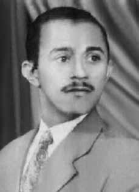

Severino
Viana
Colou
CIRCUNSTÂNCIAS DA MORTE
Severino Viana Colou morreu no dia 24 de maio de 1969. Segundo documento do Departamento de Ordem Política e Social (DOPS), Severino era procurado quando foi preso por agentes do Estado na 1 a Companhia da Polícia do Exército, na Vila Militar de Deodoro, no Rio de Janeiro. Além disso, através do Pedido de Busca no 0569, o Centro de Informações da Marinha (Cenimar) informou que Severino fora preso três dias antes de sua morte, em 21 de maio de 1969, em Magé, “acusado de assaltos e assassinato de uma sentinela do Tribunal Militar”. De acordo com Inquérito Policial Militar (IPM) realizado no Quartel General da 1a Divisão de Infantaria, ele teria se enforcado com a própria calça que vestia, amarrada em uma das barras da cela onde estava preso. O documento destaca a existência de hematomas, feridas e escoriações em diferentes partes do corpo de Severino Viana, o que pode ser considerado um indício de que foi submetido a torturas. A versão oficial também é explicitada através do depoimento do 3o Sargento do Exército, Luiz Paulo Silva de Carvalho. Ele destaca que era o responsável por atender as demandas de Severino, visto que tinha a chave da cela onde este ficava. Aponta também que, por volta das 11h30, ele e o 1o Tenente Ailton Joaquim se dirigiram à cela de Severino para tentar convencê-lo a comer já que, segundo informa, ele estava fazendo greve de fome. Contudo, ao levantarem o tecido que impede a visualização interna da cela, depararam-se com uma calça amarrada à grade e a outra ponta ao pescoço. Também em depoimento, Ailton teria chamado por Severino algumas vezes. Como não recebeu resposta, tentou retirar o referido pano, confirmando, em seguida, que se tratava da calça de Severino. Depois de o comandante de guarda ter aberto a cela, verificou que a vítima estava pendurada pela vestimenta citada, reforçando a versão oficial de suicídio. O laudo pericial do local, realizado no mesmo dia 24, pelos legistas Euler Moreira de Moraes, 2o Sargento, e Erival Lima dos Santos, 3o Sargento, concluiu que “a morte ocorreu por autodeterminação, tendo a vítima na efetivação desse objetivo, usado como força sua própria calça”. Esse mesmo laudo, aprovado e assinado pelo tenente-coronel Alexandre Boaventura Bandeira de Mello em 24 de junho, aponta, porém, que “em ambas as pernas, na altura da canela apresentava ferida contusa e escoriações generalizadas pelo tronco”, e “nas nádegas apresentava hematomas de formato irregular”, sem explicar as causas dessas marcas. Em declarações prestadas à época dos fatos em auditorias militares, os ex-presos políticos Antônio Pereira Mattos, Ângelo Pezzuti da Silva e Afonso Celso Lana Leite denunciaram as torturas que Severino sofreu no período em que se encontrava preso na Vila Militar. A certidão de óbito de Severino Viana registra a data da morte como 24 de junho de 1969, o que contrasta com outros documentos expedidos pelos órgãos da repressão, como o IPM, que registra a data da morte em 24 de maio de 1969 e a data de entrada no IML em 2 de junho do mesmo ano. O núcleo pericial da CNV, entretanto, identificou inconsistências no laudo pericial de local de morte, nas fotografias anexas a ele e no Auto de Autópsia da lavra do capitãomédico Arildo da Silva, do Serviço Médico Legal do HCE, de 24 de maio de 1969. Em suas conclusões, a análise pericial da CNV indica que a morte de Severino ocorreu “por homicídio por estrangulamento, ou por outra causa porventura omitida pela análise médico-legal”. Essa análise se sustenta na existência de dois sulcos no pescoço, “um apergaminhado e horizontal, típico de estrangulamento, enquanto o outro, oblíquo e ascendente, possui o fundo claro, típico daqueles produzidos post mortem”. Tampouco há uma correspondência entre a descrição da calça enrolada ao pescoço e as fotografias incluídas no laudo que mostram que esta foi fixada por meio de nós. Além do mais, os peritos afirmam que o esquema de constrição apontado pelo laudo elaborado pelos militares não apresentaria eficiência em manter a constrição do pescoço, visto que a perna da calça se desenrolaria do corpo no instante em esse parasse o movimento de torção, fazendo com que se retornasse à posição de equilíbrio, ainda que a vítima desfalecesse. Também a altura descrita para explicar o suicídio não é suficiente para produzir o enforcamento, já que de acordo com a versão oficial, a calça foi suspendida em uma das barras verticais da cela a 1,5 metro de altura, enquanto a análise das fotografias revela que “o pescoço da vítima estaria cerca de 0,30 metro mais abaixo desse ponto, ou seja, a 1,2 metro do piso, tornando mais absurda a hipótese de enforcamento da forma relatada, observando-se que a vítima tinha 1,73m de altura”. A isto ainda deve juntar-se a intensidade e distribuição das lesões e escoriações descritas na cabeça, tronco e membros, marcas características da prática de tortura. A conclusão do laudo pericial indireto, realizado pela CNV, apontou que não houve enforcamento e que, portanto, Severino Viana Colou não se suicidou. Em depoimento aos peritos da CNV, Euler Moreira de Morais afirmou que Severino Colou não se suicidou e que assinou o laudo de necropsia que atestava a versão oficial dos fatos temendo possíveis consequências negativas. A certidão de óbito declara que Severino Colou foi enterrado como indigente no cemitério da Cacuia, na Ilha do Governador, Rio de Janeiro.
Severino Viana Colou died on May 24, 1969. According to a document from the Department of Political and Social Order (DOPS), Severino was wanted when he was arrested by State agents at the 1st Army Police Company, in Vila Militar de Deodoro, in Rio de Janeiro. Furthermore, through Search Request No. 0569, the Navy Information Center (Cenimar) reported that Severino had been arrested three days before his death, on May 21, 1969, in Magé, “accused of robberies and murder of a sentry at the Military Court.” According to the Military Police Inquiry (IPM) carried out at the General Headquarters of the 1st Infantry Division, he had hanged himself with the pants he was wearing, tied to one of the bars of the cell where he was being held. The document highlights the existence of bruises, wounds and abrasions on different parts of Severino Viana's body, which can be considered an indication that he was subjected to torture. The official version is also explained through the testimony of the 3rd Sergeant of the Army, Luiz Paulo Silva de Carvalho. He highlights that he was responsible for meeting Severino's demands, as he had the key to the cell where he was kept. He also points out that, at around 11:30 am, he and 1st Lieutenant Ailton Joaquim went to Severino's cell to try to convince him to eat since, according to reports, he was on a hunger strike. However, when they lifted the fabric that prevented them from seeing the inside of the cell, they found a pair of pants tied to the railing and the other end around their neck. Also in testimony, Ailton would have called for Severino a few times. When he received no response, he tried to remove the cloth, confirming that it was Severino's pants. After the guard commander opened the cell, he found that the victim was hanging by the aforementioned clothing, reinforcing the official version of suicide. The expert report from the scene, carried out on the same day 24, by coroners Euler Moreira de Moraes, 2nd Sergeant, and Erival Lima dos Santos, 3rd Sergeant, concluded that “the death occurred by self-determination, with the victim, in carrying out this objective, using his own pants as force”. This same report, approved and signed by Lieutenant Colonel Alexandre Boaventura Bandeira de Mello on June 24, points out, however, that “on both legs, at the level of the shin, there was a blunt wound and widespread abrasions across the torso”, and “on the buttocks there were irregularly shaped bruises”, without explaining the causes of these marks. In statements made at the time of the events in military audits, former political prisoners Antônio Pereira Mattos, Ângelo Pezzuti da Silva and Afonso Celso Lana Leite denounced the torture that Severino suffered during the period in which he was imprisoned in Vila Militar. Severino Viana's death certificate records the date of death as June 24, 1969, which contrasts with other documents issued by repressive bodies, such as the IPM, which records the date of death as May 24, 1969 and the date of entry into the IML as June 2 of the same year. The CNV expert group, however, identified inconsistencies in the expert report on the place of death, in the photographs attached to it and in the Autopsy Record written by medical captain Arildo da Silva, from the HCE Legal Medical Service, dated May 24, 1969. In its conclusions, the CNV expert analysis indicates that Severino's death occurred “as a result of homicide by strangulation, or for another cause that may have been omitted by the medico-legal analysis”. This analysis is based on the existence of two grooves on the neck, “one parched and horizontal, typical of strangulation, while the other, oblique and ascending, has a clear bottom, typical of those produced post-mortem”. Nor is there any correspondence between the description of the trousers wrapped around the neck and the photographs included in the report which show that they were secured using knots. Furthermore, the experts state that the constriction scheme indicated in the report prepared by the military would not be efficient in maintaining the constriction of the neck, since the trouser leg would unravel from the body the moment the torsional movement stopped, causing the victim to return to the balanced position, even if the victim fainted. Also, the height described to explain the suicide is not enough to cause hanging, since according to the official version, the pants were suspended from one of the vertical bars of the cell at a height of 1.5 meters, while analysis of the photographs reveals that “the victim's neck would be approximately 0.30 meters below that point, that is, 1.2 meters from the floor, making the hypothesis of hanging in the manner reported more absurd, noting that the victim was 1.73m tall. height.” To this must also be added the intensity and distribution of the injuries and abrasions described on the head, torso and limbs, characteristic marks of the practice of torture. The conclusion of the indirect expert report, carried out by the CNV, indicated that there was no hanging and that, therefore, Severino Viana Colou did not commit suicide. In testimony to CNV experts, Euler Moreira de Morais stated that Severino Colou did not commit suicide and that he signed the autopsy report that attested to the official version of the facts, fearing possible negative consequences. The death certificate states that Severino Colou was buried as a pauper in the Cacuia cemetery, on Ilha do Governador, Rio de Janeiro.
Severino Viana Colou murió el 24 de mayo de 1969. Según un documento del Departamento de Orden Político y Social (DOPS), Severino era buscado cuando fue detenido por agentes del Estado en la 1.ª Compañía de Policía del Ejército, en Vila Militar de Deodoro, en Río de Janeiro. Además, mediante Solicitud de Búsqueda No. 0569, el Centro de Información de la Marina (Cenimar) informó que Severino había sido detenido tres días antes de su muerte, el 21 de mayo de 1969, en Magé, “acusado de robos y asesinato de un centinela del Juzgado Militar”. Según la Investigación de la Policía Militar (IPM) realizada en el Cuartel General de la Primera División de Infantería, se habría ahorcado con el pantalón que vestía, atado a uno de los barrotes de la celda donde se encontraba recluido. El documento destaca la existencia de hematomas, heridas y abrasiones en diferentes partes del cuerpo de Severino Viana, lo que puede considerarse un indicio de que fue sometido a tortura. La versión oficial también se explica a través del testimonio del Sargento 3º del Ejército, Luiz Paulo Silva de Carvalho. Destaca que él era el responsable de atender las exigencias de Severino, pues tenía la llave de la celda donde lo retenían. También señala que, alrededor de las 11:30 horas, él y el teniente primero Ailton Joaquim acudieron a la celda de Severino para intentar convencerlo de comer ya que, según trascendió, se encontraba en huelga de hambre. Sin embargo, al levantar la tela que les impedía ver el interior de la celda, encontraron un pantalón atado a la barandilla y el otro extremo alrededor de su cuello. También en el testimonio, Ailton habría llamado varias veces a Severino. Al no obtener respuesta, intentó quitar la tela, confirmando que se trataba del pantalón de Severino. Luego de que el comandante de la guardia abrió la celda, encontró que la víctima estaba colgada de la ropa antes mencionada, reforzando la versión oficial del suicidio. El peritaje de la escena, realizado el mismo día 24, por los forenses Euler Moreira de Moraes, sargento 2.º, y Erival Lima dos Santos, sargento 3.º, concluyó que “la muerte se produjo por autodeterminación, siendo la víctima, en la realización de ese objetivo, el uso de sus propios pantalones como fuerza”. Este mismo informe, aprobado y firmado por el teniente coronel Alexandre Boaventura Bandeira de Mello el 24 de junio, señala, sin embargo, que “en ambas piernas, a la altura de la espinilla, había una herida contundente y abrasiones generalizadas en todo el torso”, y “en las nalgas había hematomas de forma irregular”, sin explicar las causas de estas marcas. En declaraciones realizadas durante los hechos en auditorías militares, los ex presos políticos Antônio Pereira Mattos, Ângelo Pezzuti da Silva y Afonso Celso Lana Leite denunciaron las torturas que sufrió Severino durante el período en que estuvo preso en Vila Militar. El acta de defunción de Severino Viana registra la fecha de fallecimiento como el 24 de junio de 1969, lo que contrasta con otros documentos emitidos por organismos represivos, como el IPM, que registra la fecha de fallecimiento como el 24 de mayo de 1969 y la fecha de ingreso al IML como el 2 de junio del mismo año. El peritaje de la CNV, sin embargo, identificó inconsistencias en el informe pericial sobre el lugar de la muerte, en las fotografías adjuntas al mismo y en el Acta de Autopsia redactada por el capitán médico Arildo da Silva, del Servicio Médico Legal del HCE, de fecha 24 de mayo de 1969. En sus conclusiones, el peritaje de la CNV indica que la muerte de Severino se produjo “como consecuencia de homicidio por estrangulamiento, o por otra causa que pudo haber sido omitida por el peritaje médico legal”. análisis”. Este análisis se basa en la existencia de dos surcos en el cuello, “uno reseco y horizontal, propio de estrangulamiento, mientras que el otro, oblicuo y ascendente, tiene el fondo claro, propio de los producidos post mortem”. Tampoco existe correspondencia entre la descripción de los pantalones enrollados al cuello y las fotografías incluidas en el informe que muestran que estaban sujetos mediante nudos. Además, los peritos afirman que el esquema de constricción indicado en el informe elaborado por los militares no sería eficiente para mantener la constricción del cuello, ya que la pernera del pantalón se despegaría del cuerpo en el momento en que cesara el movimiento de torsión, provocando que la víctima volviera a la posición de equilibrio, incluso si se desmayaba. Asimismo, la altura descrita para explicar el suicidio no es suficiente para provocar ahorcamiento, ya que según la versión oficial, el pantalón estaba suspendido de una de las barras verticales de la celda a una altura de 1,5 metros, mientras que el análisis de las fotografías revela que “el cuello de la víctima estaría aproximadamente a 0,30 metros por debajo de ese punto, es decir, a 1,2 metros del suelo, haciendo más absurda la hipótesis de ahorcamiento en la forma reportada, al observar que la víctima medía 1,73m de altura”. A esto también hay que sumar la intensidad y distribución de las heridas y abrasiones descritas en la cabeza, torso y extremidades, marcas características de la práctica de la tortura. La conclusión del peritaje indirecto, realizado por la CNV, indicó que no hubo ahorcamiento y que, por tanto, Severino Viana Colou no se suicidó. En declaración ante peritos de la CNV, Euler Moreira de Morais afirmó que Severino Colou no se suicidó y que firmó el informe de la autopsia que da fe de la versión oficial de los hechos, temiendo posibles consecuencias negativas. El certificado de defunción indica que Severino Colou fue enterrado como indigente en el cementerio de Cacuia, en Ilha do Governador, Río de Janeiro.